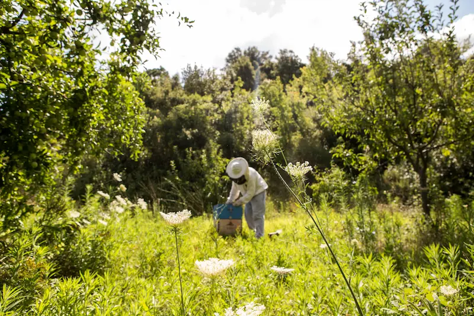
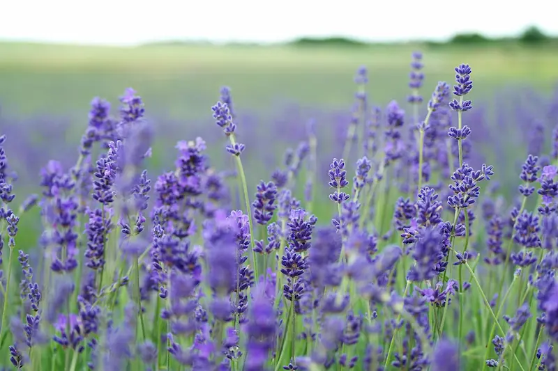

Getting Started with Beekeeping
A practical starting point for beginners covering equipment, planning, hive setup and early decisions.
Read the guide
Clear UK-focused guidance for beginners and hobbyists, covering inspections, bee health, swarm control, seasonal tasks and practical hive management.
BeezKnees also includes HiveTag, a simple beekeeping app for recording apiaries, hives, inspections, tasks and notes in one place.
Last updated: 1 May 2026
BeezKnees combines practical UK beekeeping guidance with HiveTag, a simple app for recording apiaries, hives, inspections, tasks and notes.
HiveTag helps you keep inspections, apiaries, hives, notes and tasks in one place, so you can stay organised in the apiary and at home.
Record what you see in the apiary while it is fresh in your mind.
Track colonies, follow-up actions and seasonal notes in one simple system.
Use the free tier, then upgrade for unlimited use and NFC hive tag support.
A practical starting point for beginners covering equipment, planning, hive setup and early decisions.
Read the guide
Learn what to look for during inspections, how to stay calm and how to spot issues early.
View inspection guide
Follow the UK beekeeping year month by month, from spring build-up to winter preparation.
View the calendarBeezKnees is designed to make beekeeping clearer and more practical for UK hobbyists and beginners. The site combines straightforward guidance with HiveTag, so you can both learn what to do and keep proper records of what you did.

Yes — the guides are written for UK seasons, forage patterns and common beginner questions, with links to trusted UK resources where appropriate.
Most beginners start planning in winter and spring. The best time to get bees is usually spring to early summer, once temperatures and forage improve.
No. Many beekeepers keep hives in apiaries, farmland margins or shared sites. You do need permission, suitable forage nearby and a safe, sensible placement.
At minimum you'll need a hive, suit or veil, gloves, smoker, hive tool and a way to feed if needed. Our equipment guide breaks this down into essential versus optional.
In spring and summer, inspections are often weekly, weather permitting. In colder months, inspections reduce — the monthly calendar explains what's normal.
Don't panic. Keep people and pets away, and contact a local swarm collector. Our swarm page explains what to do and what not to do.
HiveTag is the BeezKnees beekeeping app for recording apiaries, hives, inspections, tasks and notes. There is a free tier, with Premium for unlimited use and NFC hive tags.
Plant bee-friendly flowers, avoid pesticides where possible, provide water, and support local conservation. Our Help the Bees page has practical UK ideas.